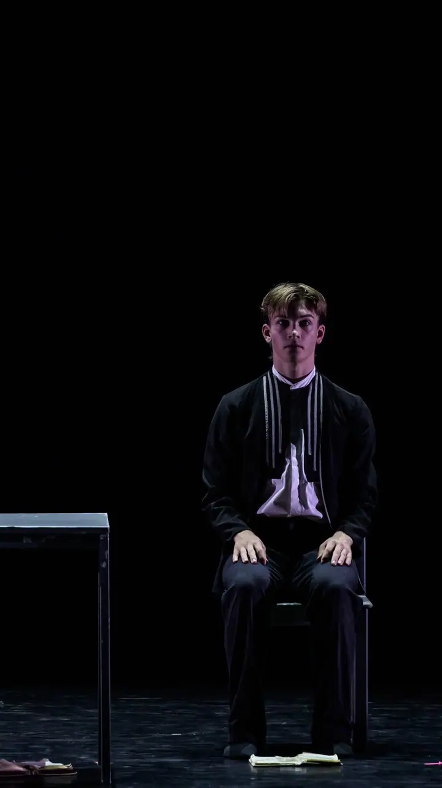
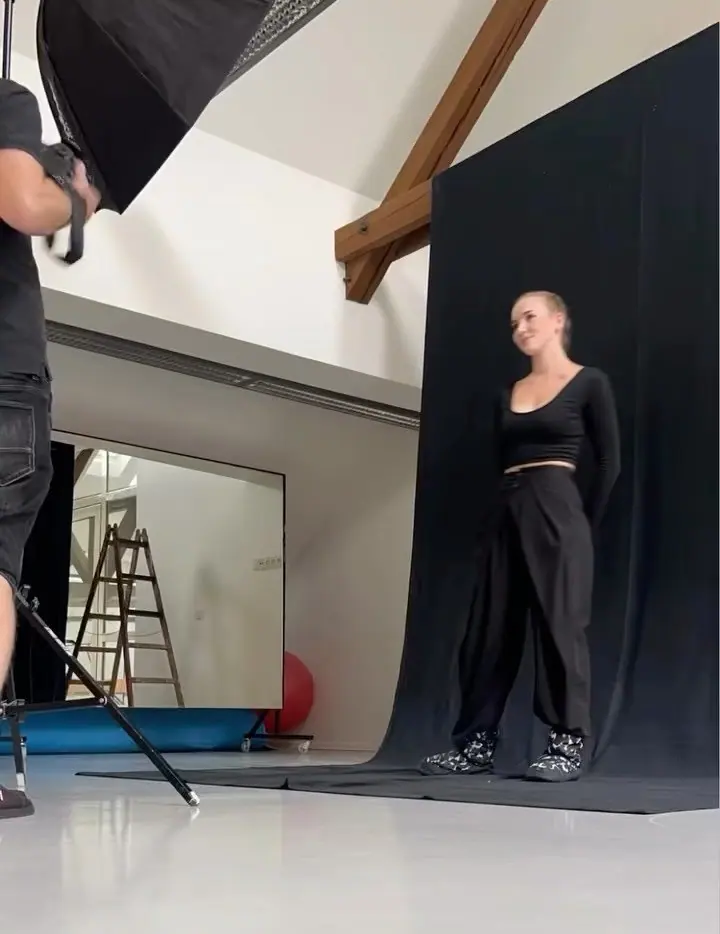

Představení z repertoáru
Uvádíme vlastní inscenace, mezi nimi La Strada, Kytice, Pro mou vlast, Listy důvěrné nebo 2 hroby. Aktuální termíny najdete v programu na webu.

Nezávislý profesionální taneční soubor (nejde o fotografa)
Jsme Pražský komorní balet, největší český nezávislý profesionální taneční soubor. Hrajeme na divadelních scénách i v historických sálech a s inscenacemi jako La Strada jezdíme za diváky po celé republice.
Zeptat se na termín
Uvádíme vlastní inscenace, mezi nimi La Strada, Kytice, Pro mou vlast, Listy důvěrné nebo 2 hroby. Aktuální termíny najdete v programu na webu.
Za diváky jezdíme i mimo Prahu. Letos na podzim míří La Strada do Chebu, Děčína a Kladna, podmínky pro hostování jsou na webu.
Členové klubu se dozvědí, co se děje za scénou, mohou si včas rezervovat nejlepší místa v hledišti a osobně se setkat s tanečníky. Klub má nové kategorie členství.
Jsme nezávislý profesionální taneční soubor se sídlem v Domě tanečního umění Praha. Náš repertoár tvoří inscenace jako La Strada, Kytice, Pro mou vlast, Listy důvěrné nebo 2 hroby.
Nezůstáváme jen v Praze. La Strada se vrací na jeviště a na přelomu září a října míří do Chebu, Děčína a Kladna. Naši tanečníci vystupují i v zahraničí, například na festivalu SOLO Contemporary Dance v turecké Ankaře.
Jako nezávislý soubor stojíme na podpoře diváků a přátel. Kdo chce vědět, co se děje za scénou, může se přidat do našeho klubu přátel nebo podepsat petici za záchranu PKB.
Napište na info@balet-praha.cz nebo zavolejte. Řekněte nám, kde a kdy byste chtěli představení uvést.
Společně vybereme titul z našeho repertoáru, který se hodí k vašemu prostoru a publiku.
Pošleme vám podmínky pro hostování a domluvíme s vámi, co je potřeba pro scénu, světla a zvuk.
Přijedeme s celým souborem a technickou složkou a odehrajeme představení pro vaše diváky.
Ano, rádi hostujeme. Podmínky pro hostování najdete na webu, podrobnosti s vámi probereme e-mailem nebo po telefonu.
Aktuální termíny jsou v programu na webu. Letos na podzim hraje La Strada v Chebu, Děčíně a Kladně.
Dozvíte se, co se děje za scénou, můžete si včas rezervovat nejlepší místa v hledišti a osobně se setkat s tanečníky. Klub má nově několik kategorií členství.
Můžete se přidat do klubu přátel, nakoupit v našem eshopu nebo podepsat a šířit petici za záchranu PKB. Petici si můžete stáhnout i jako PDF.